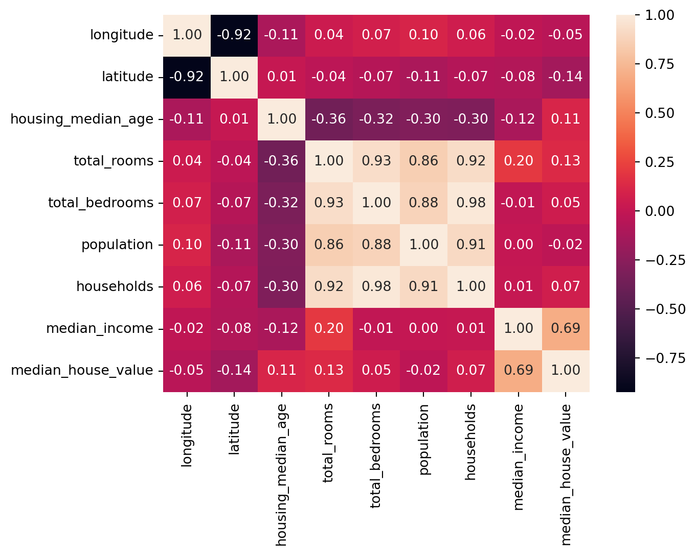

## Load data
from pathlib import Path
import pandas as pd
import tarfile
import urllib.request
def load_data(url):
path = Path("datasets/housing.tgz")
if not path.is_file():
Path("datasets").mkdir(parents=True, exist_ok=True)
urllib.request.urlretrieve(url, path)
tarfile.open(path).extractall(path='datasets')
return pd.read_csv('datasets/housing/housing.csv')
url = 'https://github.com/ageron/data/raw/main/housing.tgz'
data = load_data(url)5 Hands-on regression
Main Steps
- Look at the big picture.
- Get the data.
- Explore and visualize the data to gain insights.
- Prepare the data for machine learning algorithms.
- Select a model and train it.
- Fine-tune model.
- Present solution.
- Launch, monitor, and maintain system.
5.1 Datasets
Popular open data repositories
- https://openml.org/
- https://Kaggle.com
- https://PapersWithCode.com
- UC Irvine Machine Learning Repository — Amazon’s AWS datasets
- TensorFlow datasets
Meta portals (they list open data repositories)
- https://DataPortals.org
- https://OpenDataMonitor.eu
Other pages listing many popular open data repositories
- Wikipedia’s list of machine learning datasets
- https://Quora.com
- The datasets subreddit
In this chapter we’ll use the California Housing Prices dataset from the StatLib repository. This dataset is based on data from the 1990 California census. It is not exactly recent but it has many qualities for learning.
5.2 Look at the big picture
Questions
- Business objective? Current solution (if any)?
- How to use and benefit from the model?
- Data Pipelines?
- Determine kind of model
- Select preformance measures
- Check the Assumptions
Answers
- Predict median housing price in any district. The results are used for another ML system for investment analysis. The current solution is to gather up-to-date information about a district, or to estimate manually using complex rules if no information.
- The current solution is costly and time-consuming, and it was often off by more than 30%. Therefore, a ML model could be more useful.
- Data pipelines: A sequence of data processing components. Pipelines are very common in machine learning systems, since there is a lot of data to manipulate and many data transformations to apply.
- This is a regression task (labeled data), batch learning (data is quite small and do not change too much) and model-based learning
- Metrics for regression:
Expand to learn more about metrics
Both the RMSE and the MAE are ways to measure the distance between two vectors: the vector of predictions and the vector of target values. Various distance measures, or norms, are possible:
- Computing the root of a sum of squares (RMSE) corresponds to the Euclidean norm: this is the notion of distance we are all familiar with. It is also called the l2 norm, noted |·|₂ (or just |·|).
- Computing the sum of absolutes (MAE) corresponds to the l1 norm, noted |·|₁. This is sometimes called the Manhattan norm because it measures the distance between two points in a city if you can only travel along orthogonal city blocks.
- More generally, the lk norm of a vector v containing n elements is defined as ∥v∥k = (|v₁|ᵏ + |v₂|ᵏ + … + |vₙ|ᵏ)¹/ᵏ. l0 gives the number of nonzero elements in the vector, and l∞ gives the maximum absolute value in the vector.
The higher the norm index, the more it focuses on large values and neglects small ones. This is why the RMSE is more sensitive to outliers than the MAE. But when outliers are exponentially rare (like in a bell-shaped curve), the RMSE performs very well and is generally preferred.
RMSE (root mean squared error): l2 norm
\[
RMSE(X, y) = \sqrt{\frac{1}{m}\sum_{i=1}^{m}(y_{hat}^{(i)} - y^{(i)})^2}
\]
MAE (mean squared error): l1 norm
\[
MAE(X, y) = \frac{1}{m}\sum_{i=1}^{m}|y_{hat}^{(i)} - y^{(i)}|
\]
- Check with the team in charge of the downstream system that use out output whether it is suitable or not (e.g. it is terrible if after several months building model you realize that they need ordinal output not numerical one)
5.3 Get the Data
5.3.1 Download Data
5.3.2 Quick Look to Data Structure: head(), info(), describe(), value_counts(), histplot()
## Quick look
pd.set_option('display.max_columns', None) # display all columns
data.head()| longitude | latitude | housing_median_age | total_rooms | total_bedrooms | population | households | median_income | median_house_value | ocean_proximity | |
|---|---|---|---|---|---|---|---|---|---|---|
| 0 | -122.23 | 37.88 | 41.0 | 880.0 | 129.0 | 322.0 | 126.0 | 8.3252 | 452600.0 | NEAR BAY |
| 1 | -122.22 | 37.86 | 21.0 | 7099.0 | 1106.0 | 2401.0 | 1138.0 | 8.3014 | 358500.0 | NEAR BAY |
| 2 | -122.24 | 37.85 | 52.0 | 1467.0 | 190.0 | 496.0 | 177.0 | 7.2574 | 352100.0 | NEAR BAY |
| 3 | -122.25 | 37.85 | 52.0 | 1274.0 | 235.0 | 558.0 | 219.0 | 5.6431 | 341300.0 | NEAR BAY |
| 4 | -122.25 | 37.85 | 52.0 | 1627.0 | 280.0 | 565.0 | 259.0 | 3.8462 | 342200.0 | NEAR BAY |
There are total 10 features, each row represents a district observation
data.info()<class 'pandas.core.frame.DataFrame'>
RangeIndex: 20640 entries, 0 to 20639
Data columns (total 10 columns):
# Column Non-Null Count Dtype
--- ------ -------------- -----
0 longitude 20640 non-null float64
1 latitude 20640 non-null float64
2 housing_median_age 20640 non-null float64
3 total_rooms 20640 non-null float64
4 total_bedrooms 20433 non-null float64
5 population 20640 non-null float64
6 households 20640 non-null float64
7 median_income 20640 non-null float64
8 median_house_value 20640 non-null float64
9 ocean_proximity 20640 non-null object
dtypes: float64(9), object(1)
memory usage: 1.6+ MBData with 10 columns and 20640 rows 9 numerical features, 1 categorical feature ‘total_bedrooms’ has only 20433 non-null values
data.describe(include='all') # describe all type of data| longitude | latitude | housing_median_age | total_rooms | total_bedrooms | population | households | median_income | median_house_value | ocean_proximity | |
|---|---|---|---|---|---|---|---|---|---|---|
| count | 20640.000000 | 20640.000000 | 20640.000000 | 20640.000000 | 20433.000000 | 20640.000000 | 20640.000000 | 20640.000000 | 20640.000000 | 20640 |
| unique | NaN | NaN | NaN | NaN | NaN | NaN | NaN | NaN | NaN | 5 |
| top | NaN | NaN | NaN | NaN | NaN | NaN | NaN | NaN | NaN | <1H OCEAN |
| freq | NaN | NaN | NaN | NaN | NaN | NaN | NaN | NaN | NaN | 9136 |
| mean | -119.569704 | 35.631861 | 28.639486 | 2635.763081 | 537.870553 | 1425.476744 | 499.539680 | 3.870671 | 206855.816909 | NaN |
| std | 2.003532 | 2.135952 | 12.585558 | 2181.615252 | 421.385070 | 1132.462122 | 382.329753 | 1.899822 | 115395.615874 | NaN |
| min | -124.350000 | 32.540000 | 1.000000 | 2.000000 | 1.000000 | 3.000000 | 1.000000 | 0.499900 | 14999.000000 | NaN |
| 25% | -121.800000 | 33.930000 | 18.000000 | 1447.750000 | 296.000000 | 787.000000 | 280.000000 | 2.563400 | 119600.000000 | NaN |
| 50% | -118.490000 | 34.260000 | 29.000000 | 2127.000000 | 435.000000 | 1166.000000 | 409.000000 | 3.534800 | 179700.000000 | NaN |
| 75% | -118.010000 | 37.710000 | 37.000000 | 3148.000000 | 647.000000 | 1725.000000 | 605.000000 | 4.743250 | 264725.000000 | NaN |
| max | -114.310000 | 41.950000 | 52.000000 | 39320.000000 | 6445.000000 | 35682.000000 | 6082.000000 | 15.000100 | 500001.000000 | NaN |
for ft in data.select_dtypes('object'): # choose 'object' features only
print(data[ft].value_counts())
print(f'Number of classes: {data[ft].nunique()}')ocean_proximity
<1H OCEAN 9136
INLAND 6551
NEAR OCEAN 2658
NEAR BAY 2290
ISLAND 5
Name: count, dtype: int64
Number of classes: 5Quite imbalanced classes
## Plot histogram of numerical features
import matplotlib.pyplot as plt
data.hist(bins=50, figsize=(8,8))
plt.show()housing_median_age: capped at range (1,52)
median_income: scaled and capped at range ~ (0.5, 15)
median_house_value: capped at top range of 500,000
These features are skewed and have very different scales => Transforming and Feature Scaling
5.3.3 Create train, val and test set: train_test_split()
random sampling: data must be large enough, otherwise there is a risk of sampling bias stratified sampling: based on some very important features, help avoid bias and ensure train set and test set are representative to full dataset
Here we assump that median_income is very important feature to predict household value
## Create new feature (income group)
import numpy as np
data['income_grp'] = pd.cut(data['median_income'], bins=[0,1.5,3,4.5,6,np.inf], labels=[1,2,3,4,5])
data.income_grp.value_counts().sort_index().plot.bar(rot=0, grid=True)
plt.title('Frequency of income group')
plt.xlabel('Income group')
plt.ylabel('Frequency')
plt.show()## Split data into train, val, test set
from sklearn.model_selection import train_test_split
x_train, x_test, y_train, y_test = train_test_split(data.drop('median_house_value', axis=1), data.median_house_value, stratify=data['income_grp'], test_size=0.2, random_state=24)## Drop the 'income_grp' after using
for df in [x_train, x_test]:
df.drop('income_grp', axis=1, inplace=True)5.4 Explore and visualize the data to gain insights
If the data is very large, we will sample an exploration set to manipulate faster and easier. On the other hand, just work directly on full set if the data is quite small.
df_vis = data.copy()5.4.1 Visualize
Plot
Large point size: larger population Blue -> red: higher house price
Correlation
There are 2 ways to perform: heatmap and pairgrid map
<Axes: >
Try pd.plotting.scatter_matrix
Look closely too the relation between ‘median_house_value’ and ‘median_income’, we see there is a strong positive correlation, but there are some clearly horizontal line at 500,000; 450,000; 350,000 and roughly 280,000. We should remove these instances to prevent the algorithms learning these patterns.
5.4.2 Attributes combination
Useful when we want to find better features to predict
df_vis['room_per_house'] = df_vis['total_rooms']/df_vis['households']
df_vis['bedroom_ratio'] = df_vis['total_bedrooms']/df_vis['total_rooms']
df_vis['people_per_house'] = df_vis['population']/df_vis['households']
corr_matrix = df_vis.corr(numeric_only=True)
corr_matrix['median_house_value'].sort_values(ascending=False)median_house_value 1.000000
median_income 0.688075
room_per_house 0.151948
total_rooms 0.134153
housing_median_age 0.105623
households 0.065843
total_bedrooms 0.049686
people_per_house -0.023737
population -0.024650
longitude -0.045967
latitude -0.144160
bedroom_ratio -0.255880
Name: median_house_value, dtype: float645.5 Explore and Visualize Data
- Visualize
- Compute correlation (corr_matrix(), pandas.plotting.scatter_matrix() )
- Attributes combination
5.6 Prepare Data
Benefits: - Reproduce tranformations easily - Build library of tranformations for future projects - Use in live system to transform new data - Try various transformations => Choose best combination of transformations
5.6.1 Clean Data
Missing Values: - Get rid of them - Get rid of whole attributes - Set new values (imputation): zero, mean, median, most_frequent, constant, etc. - sklearn.impute.SimpleImputer() - Apply to all numerical variables cause we do not know there will not be any missing values in the future. - More powerful imputer: KnnImputer(), IterativeImputer()
5.6.2 Handling Text and Categorical Attributes
- OneHotEncoder, LabelEncoder, OrdinalEncoder
- default: Scipy sparse matrix => set sparse=False or toarray()
- pandas.get_dummies(): generate new columns for unknown categories
- OneHotEncoder: detect unknown categories
- If a categorical attribute has a large number of possible categories => OneHotEncoder will be result in a large number of input features
- Turn categorical -> numerical category
- In neural networks: replace each category -> embedding (a learnable, low-dimensional vector)
5.6.3 Feature Scaling and Tranformations
5.6.3.1 For input attributes
- Some ML algorithms don’t perform well when the input numerical attributes have very different scales.
- Without any scaling, most models will be biased toward ignoring the small values and focusing more on the larger values.
Two common feature scaling techniques: min-max scaling and standardization - Use fit or fit_transform only on training set - Training set will always be scaled to specific range, if new data contains outliers, these may end up scaled outside the range => Set clip hyperparameter to True to avoid.
Min-max scaling (normalization):
Default range: 0-1
MinMaxScaler(feature_range=(-1,1)): change the prefered range
Standardization:
Less affected by outliers
StandardScaler(with_mean=False): only divide the data by the standard deviation, without subtracting the mean => scale sparse matrix without converting to dense matrix
Heavy-tailed attributes:
Both min-max scaling and standardization will squash most values into a small range
Solutions: square root (or power 0-1), logarithm, bucketizing
- bucketizing: chop its distribution into equal-sized buckets => replace with the index (i.e. percentile, categories (for multimodal distribution)) of buckets.
- multimodal distribution: 2 or more clear peaks (also called mode).
- other options for multimodal distribution: Gaussian radial basic function (RBF) measure the similarity between that attribute and the modes.
- bucketizing: chop its distribution into equal-sized buckets => replace with the index (i.e. percentile, categories (for multimodal distribution)) of buckets.
5.6.3.2 For output
After feature scaling the target values to make predictions on new data, it has to be inverse_transform(), or just do TransformedTargetRegressor.
from sklearn.compose import TransformedTargetRegressor
from sklearn.linear_model import LinearRegression
from sklearn.preprocessing import StandardScaler
model = TransformedTargetRegressor(LinearRegression(),
transformer=StandardScaler())
# model.fit(housing[["median_income"]], housing_labels)
# predictions = model.predict(some_new_data)5.6.4 Custom Transformers
Write own custom transformers: custom transformations, cleanup operations, or combining specific attributes.
from sklearn.preprocessing import FunctionTransformerFor details, check p.79, 80, 81
- A transformer should contains:
- fit(): self.n_features_in_ , return self
- get_feature_names_out() => to create DataFrame after transform
- inverse_transform()
- This is a custom transformer using KMeans clusterer in the fit() method to identify the main clusters in the training data, and then uses rbf_kernel() in the transform() method to measure how similar each sample is to each cluster center:
from sklearn.cluster import KMeans
from sklearn.base import BaseEstimator, TransformerMixin
class ClusterSimilarity(BaseEstimator, TransformerMixin):
def __init__(self, n_clusters=10, gamma=1.0, random_state=None):
self.n_clusters = n_clusters
self.gamma = gamma
self.random_state = random_state
def fit(self, X, y=None, sample_weight=None):
self.kmeans_ = KMeans(self.n_clusters, random_state=self.random_state)
self.kmeans_.fit(X, sample_weight=sample_weight)
return self # always return self!
def transform(self, X):
return rbf_kernel(X, self.kmeans_.cluster_centers_, gamma=self.gamma)
def get_feature_names_out(self, names=None):
return [f"Cluster {i} similarity" for i in range(self.n_clusters)]For details, check p.82
- You can check whether your custom estimator respects Scikit-Learn’s API by passing an instance to check_estimator() from the sklearn.utils.estimator_checks package. For the full API, check out https://scikit-learn.org/stable/developers.
5.6.5 Transformation Pipelines
Pipeline: sequence of transformations => Take list of names/estimators
- Names must be unique and do not contain double underscores
- First (n-1) names: transformers Last name: regardless transformer or predictor
2 ways:
Pipeline
from sklearn.pipeline import Pipeline
from sklearn.impute import SimpleImputer
num_pipeline = Pipeline([
("impute", SimpleImputer(strategy="median")),
("standardize", StandardScaler()),
])make_pipeline (don’t care naming estimators)
from sklearn.pipeline import make_pipeline
num_pipeline = make_pipeline(SimpleImputer(strategy="median"), StandardScaler())The pipeline exposes the same methods as the final estimator (transformer or predictor)
In a Jupyter notebook, if we import sklearn and run sklearn.set_config(display=“diagram”), all Scikit-Learn estimators will be rendered as interactive diagrams. This is particularly useful for visualizing pipelines. To visualize num_pipeline, run a cell with num_pipeline as the last line. Clicking an estimator will show more details.
2 ways to apply transform for numerical attributes and categorical attributes seperately:
ColumnTransformer:
from sklearn.compose import ColumnTransformer
from sklearn.pipeline import Pipeline, make_pipeline
from sklearn.impute import SimpleImputer
from sklearn.preprocessing import StandardScaler, OneHotEncoder
num_attribs = ["longitude", "latitude", "housing_median_age", "total_rooms", "total_bedrooms", "population", "households", "median_income"]
cat_attribs = ["ocean_proximity"]
num_pipeline = Pipeline([
("impute", SimpleImputer(strategy="median")),
("standardize", StandardScaler()),
])
cat_pipeline = make_pipeline(
SimpleImputer(strategy="most_frequent"),
OneHotEncoder(handle_unknown="ignore"))
preprocessing = ColumnTransformer([
("num", num_pipeline, num_attribs),
("cat", cat_pipeline, cat_attribs),
])make_column_selector, make_column_transformer (don’t care naming estimators)
from sklearn.compose import make_column_selector, make_column_transformer
preprocessing = make_column_transformer(
(num_pipeline, make_column_selector(dtype_include=np.number)),
(cat_pipeline, make_column_selector(dtype_include=object)),
)Drop or passthrough columns: *For details, see p.86
Recap Pipeline
Missing values in numerical features will be imputed by replacing them with the median, as most ML algorithms don’t expect missing values. In categorical features, missing values will be replaced by the most frequent category.
The categorical feature will be one-hot encoded, as most ML algorithms only accept numerical inputs.
A few ratio features will be computed and added: bedrooms_ratio, rooms_per_house, and people_per_house. Hopefully these will better correlate with the median house value, and thereby help the ML models.
A few cluster similarity features will also be added. These will likely be more useful to the model than latitude and longitude.
Features with a long tail will be replaced by their logarithm, as most models prefer features with roughly uniform or Gaussian distributions.
All numerical features will be standardized, as most ML algorithms prefer when all features have roughly the same scale.
Final Pipeline:
def column_ratio(X):
return X[:, [0]] / X[:, [1]]
def ratio_name(function_transformer, feature_names_in):
return ["ratio"] #feature names out
def ratio_pipeline():
return make_pipeline(
SimpleImputer(strategy="median"),
FunctionTransformer(column_ratio, feature_names_out=ratio_name),
StandardScaler())
log_pipeline = make_pipeline(
SimpleImputer(strategy="median"),
FunctionTransformer(np.log, feature_names_out="one-to-one"),
StandardScaler())
cluster_simil = ClusterSimilarity(n_clusters=10, gamma=1., random_state=42)
default_num_pipeline = make_pipeline(SimpleImputer(strategy="median"),
StandardScaler())
preprocessing = ColumnTransformer([
("bedrooms", ratio_pipeline(), ["total_bedrooms", "total_rooms"]),
("rooms_per_house", ratio_pipeline(), ["total_rooms", "households"]),
("people_per_house", ratio_pipeline(), ["population", "households"]),
("log", log_pipeline, ["total_bedrooms", "total_rooms", "population",
"households", "median_income"]),
("geo", cluster_simil, ["latitude", "longitude"]),
("cat", cat_pipeline, make_column_selector(dtype_include=object)),
],
remainder=default_num_pipeline) # one column remaining: housing_median_age